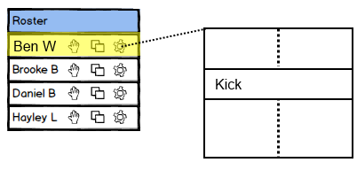
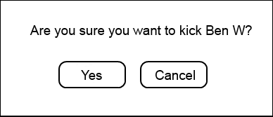
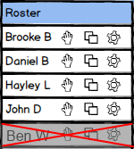

2.8.4 Kicking a Student
There are a number of situations where a presenter may want to kick a student from an ongoing EClass session. When a student becomes unruly or disruptive, the presenter has a quick and simple way to remove the student from the EClass session.
Figure 1 shows how to access the 'Kick' option.

Figure 1: Accessing the kick option.
The presenter accesses the 'Kick' option via the gear next to a student's name ("Ben W" in this scenario). Clicking on the gear produces a drop-down list that includes the 'Kick' option. When the presenter selects the option, the EClass displays a confirmation dialog.
Figure 2 shows the confirmation dialog that appears after clicking on the 'Kick' option.

Figure 2: Kick confirmation dialog.
The dialog asks if the presenter is sure about kicking the student and includes the student's name. The dialog closes and nothing changes if the presenter selects 'Cancel'. If the presenter clicks 'Yes', then the student is kicked from the EClass session. The EClass disables the student from rejoining the session and the roster window reflects the student's new status.
Figure 3 shows the updated roster after a presenter has selected 'Yes' in the kick confirmation dialog.

Figure 3: Roster after a student is kicked.
The kicked student moves to the bottom of the roster. Similar to students who are absent, the roster covers the kicked student's name with a grey overlay to designate that he or she is no longer present. Additionally, the roster displays a red 'X' across the kicked student's roster slot. The red 'X' allows the presenter to distinguish between ordinary absences and absences due to kicking.
The roster does not maintain the kicked status and associated red 'X' between EClass sessions.
Prev: sorting-overview
| Next: [none]
| Up: managing-roster-overview
| Top: index